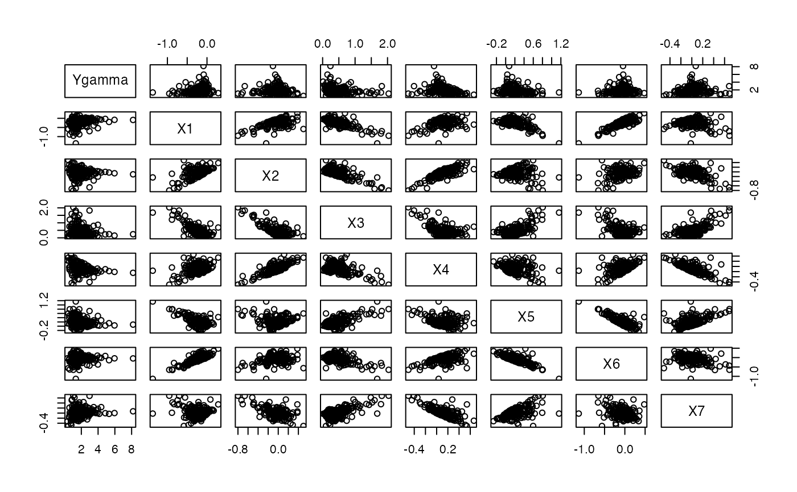

R/simul_data_UniYX_gamma.R
simul_data_UniYX_gamma.RdThis function generates a single univariate gamma response value \(Ygamma\) and a vector of explanatory variables \((X_1,\ldots,X_{totdim})\) drawn from a model with a given number of latent components.
simul_data_UniYX_gamma(totdim, ncomp, jvar, lvar, link = "inverse", offset = 0)
| totdim | Number of columns of the X vector (from |
|---|---|
| ncomp | Number of latent components in the model (to use noise, select ncomp=3) |
| jvar | First variance parameter |
| lvar | Second variance parameter |
| link | Character specification of the link function in the mean model
(mu). Currently, " |
| offset | Offset on the linear scale |
\((Ygamma,X_1,\ldots,X_{totdim})\)
This function should be combined with the replicate function to give rise to a larger dataset. The algorithm used is a modification of a port of the one described in the article of Li which is a multivariate generalization of the algorithm of Naes and Martens.
T. Naes, H. Martens, Comparison of prediction methods for
multicollinear data, Commun. Stat., Simul. 14 (1985) 545-576.
Morris, Elaine B. Martin, Model selection for partial least squares
regression, Chemometrics and Intelligent Laboratory Systems 64 (2002),
79-89, doi: 10.1016/S0169-7439(02)00051-5
.
A new bootstrap-based stopping criterion in PLS component construction,
J. Magnanensi, M. Maumy-Bertrand, N. Meyer and F. Bertrand (2016), in The Multiple Facets of Partial Least Squares and Related Methods,
doi: 10.1007/978-3-319-40643-5_18
A new universal resample-stable bootstrap-based stopping criterion for PLS component construction,
J. Magnanensi, F. Bertrand, M. Maumy-Bertrand and N. Meyer, (2017), Statistics and Compututing, 27, 757–774.
doi: 10.1007/s11222-016-9651-4
New developments in Sparse PLS regression, J. Magnanensi, M. Maumy-Bertrand, N. Meyer and F. Bertrand, (2021), Frontiers in Applied Mathematics and Statistics, doi: 10.3389/fams.2021.693126
Jeremy Magnanensi, Frédéric Bertrand
frederic.bertrand@utt.fr
https://fbertran.github.io/homepage/
Jérémy Magnanensi, Frédéric Bertrand
frederic.bertrand@utt.fr
http://github.fbertran.io/homepage/
set.seed(314) ncomp=rep(3,100) totdimpos=7:50 totdim=sample(totdimpos,100,replace=TRUE) l=3.01 #for (l in seq(3.01,15.51,by=0.5)) { j=3.01 #for (j in seq(3.01,9.51,by=0.5)) { i=44 #for ( i in 1:100){ set.seed(i) totdimi<-totdim[i] ncompi<-ncomp[i] datasim <- t(replicate(200,simul_data_UniYX_gamma(totdimi,ncompi,j,l))) #} #} #} pairs(datasim)